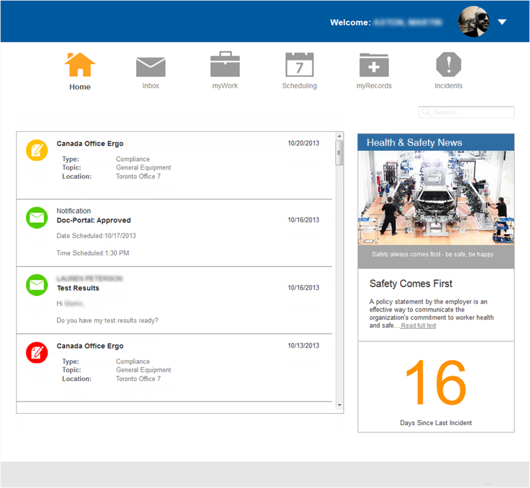
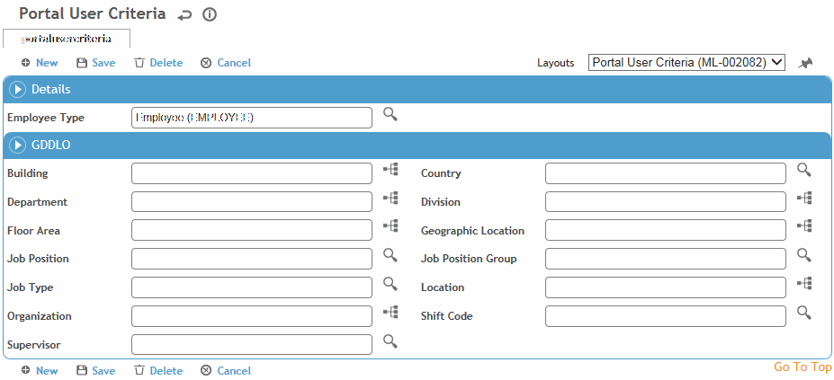

The Cority Portal allows non-Cority users to log in to a secure website to:
schedule clinic visits (for themselves or for employees who report to them)
communicate with their health center's practitioners
view and complete online questionnaires, assigned audits and inspections, and surveys
view information from their medical records (if they have appropriate permissions); this may include medications, lab results, allergies, immunizations, appointments, and indicators such as blood pressure, BMI, height, weight, pulse, respiration, and temperature
submit incidents (with or without related injury or illness), suggestions, or observations.
A mobile version of the Portal is available (<siteroot>/mobile); please contact your Cority representative for more information.
For more information about using the Portal, refer to the Cority Portal Guide.

Configuration is required in system settings, layouts, and tables:
|
System settings |
|
|
# of questions per page on Portal |
Defines how many questions display at once when accessing questionnaires from the Portal. Child questions are not affected by this setting. |
|
Allow Portal users to change their email and home address information |
Portal users can change their contact information without administrative involvement. |
|
Allow Portal users to reset their password |
Portal users can reset their password without administrative involvement. |
|
Authenticate Guest Accounts for Portal |
If selected, guest accounts are authenticated prior to accessing the Portal. |
|
Cube View to use in Portal |
Choose from the saved custom views. If the result of the cube metric is a single number, it will display on the Portal dashboard. |
|
Disable <module> in Portal |
Disable access to modules within the Portal. |
|
Display the privacy agreement message for Portal users on login |
Force users to accept a privacy agreement upon logging in to the Portal (agreement content defined in the “Privacy agreement content” system setting) |
|
Enable offline mode for Portal mobile |
Allow Portal mobile to be used while offline. |
|
Only display signed <immunizations/lab results/medications> in Portal’s myRecords |
Limit the records that the employee can see in the Portal. Setting is disabled if corresponding “Disable <module> in Portal” setting (above) is selected. |
|
Portal Authentication Method |
Similar to but independent from the application authentication method. |
|
Portal Dashboard Image |
Image and caption to display on the Portal dashboard. |
|
Portal Footer Address/Email/Phone Number |
Contact information to display in the footer of the Portal. |
|
Portal Message |
Any message you want to broadcast to Portal users. |
|
Tables |
|
|
Only activities marked as Portal Activity are available in the Portal, for the duration defined or one hour if not defined. |
|
|
There are three hardcoded statuses that are used for scheduling in the Portal: PORTAL_PND (Pending Approval), PORTAL_APP (Approved), and PORTAL_RJD_CAN (Rejected/Cancelled). |
|
|
Portal users can only schedule appointments during the available times defined for the health centre. There is also an option to assist the user with the practitioner’s next available timeslot for a particular activity. |
|
|
Questionnaires only appear on the Portal if the Cloud inbox (Questionnaire Inbox for Portal) is defined; this is where the questionnaire will be directed once completed and submitted. |
|
|
Only events in the event report group marked as Default Standalone Selection are available in the Portal. |
|
|
Identify the layout to be used for the Portal. |
|
|
Layouts |
|
|
The Portal has its own set of layouts which can be found by searching “Portal” in Layouts description. You can clone any of these layouts. To ensure that they display in the Portal, assign them to the Portal role. Of note:
|
|
Important: When configuring Portal, prohibit users from any fields that contain sensitive information (for example, a PII field such as National Insurance Number).
This will ensure that Portal users do not have visibility into sensitive information.
If you need help configuring this in Portal, contact your Client Success Manager.
Employees must register for Portal access. Employees who are registered as Portal users will appear in the User table but under the “Portal users” view.
If an employee is terminated (a Termination Date is entered in their employee record), they are automatically restricted from accessing the Portal.
Cority users can also be Portal users, but it should be avoided due to potential layout issues. Such users can add a shortcut to the Portal in their My Favorites menu (see Customizing Your Menu).
Unregistered Portal users may login as Guest with limited functionality (no Dashboard items, can only complete questionnaires or report incidents).
Employee records must include their primary Health Center, either populated via the HR load or manually.
Before employees can register, you must identify which employees are allowed to register. You can define any combination of employee type and GDDLOFB. For example, registration may be allowed for those with employee type “Employee” and Location = A.
To define these criteria, in the Administrator menu click Portal User Setup.
In the Employee Demographic Criteria section, click New.

Select the Employee Type and any GDDLOFB fields that you want to limit on. Only employees whose demographic records match this criteria exactly will be allowed to register. If a field is left blank in this criteria screen, all (including blank) values in the corresponding employee records will be accepted.
Click Save.
Registering for the Portal:
To register, an employee will go to the Portal registration page (the URL takes the form <siteroot>/portallogin) and click Register Here.
The employee completes the registration fields and creates a username and password. These fields are configurable in the Portal Registration layout. If the employee is also a Cority user, they must enter a different username and password from their Cority login.
The application checks the values entered against the Cority employee record and the Portal user criteria, and ensures the username is not already in use.
If you use SSO/LDAP authentication, the employee must enter their active directory userID and password.